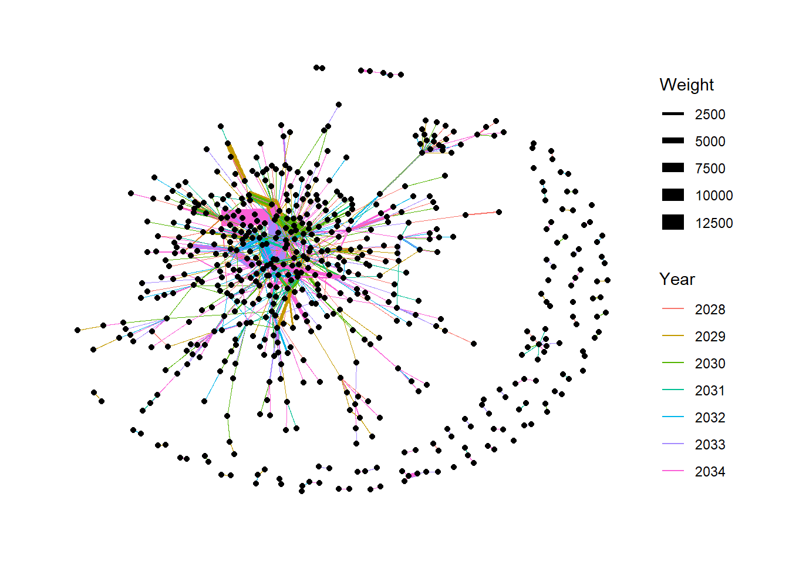
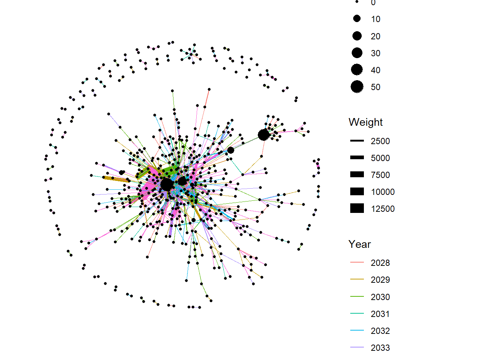

Show the code
pacman::p_load(igraph, tidygraph, ggraph,
visNetwork, lubridate, clock,
tidyverse, graphlayouts,jsonlite,gtsummary,
tinygraph)Yen Yun Hsuan
May 28, 2023
This is Mini-Challenge 2 of VAST Challenge 2023.
The country of Oceanus has sought FishEye International’s help in identifying companies possibly engaged in illegal, unreported, and unregulated (IUU) fishing.
As part of the collaboration, FishEye’s analysts received import/export data for Oceanus’ marine and fishing industries. To facilitate their analysis, FishEye transformed the trade data into a knowledge graph. Using this knowledge graph, they hope to understand business relationships, including finding links that will help them stop IUU fishing and protect marine species that are affected by it.
FishEye analysts found that node-link diagrams gave them a good high-level overview of the knowledge graph. However, they are now looking for visualizations that provide more detail about patterns for entities in the knowledge graph.
FishEye knows from past experience that companies caught fishing illegally will shut down but will then often start up again under a different name. FishEye wants your help to use visual analytics to identify temporal patterns for individual entities and between entities in the knowledge graph FishEye created from trade records. Categorize the types of business relationship patterns you find. Limit your response to 600 words and 6 images.
At the root-level, MC2 is a dictionary with graph-level properties specified as keys ( directed , mulitgraph , graph ). The nodes and links keys provide a dictionary of the nodes and links.
Below extract data frame from MC2 list as tibble table.
Rename id as label, and create a new column “id”.
Use select to reorder column sequences, with id column in the first.
| Col name | Description |
|---|---|
| label | Name of the company that originated (or received) the shipment |
| shpcountry | Country the company most often associated with when shipping |
| rcvcountry | Country the company most often associated with when receiving |
Rows: 34,576
Columns: 4
$ id <int> 1, 2, 3, 4, 5, 6, 7, 8, 9, 10, 11, 12, 13, 14, 15, 16, 17, …
$ label <chr> "AquaDelight Inc and Son's", "BaringoAmerica Marine Ges.m.b…
$ shpcountry <chr> "Polarinda", NA, "Oceanus", NA, "Oceanus", "Kondanovia", NA…
$ rcvcountry <chr> "Oceanus", NA, "Oceanus", NA, "Oceanus", "Utoporiana", NA, … id label shpcountry rcvcountry
0 0 22359 2909 Use select to drop three “value-” columns with lots of NA, and drop “dataset” which is no need.
arrivaldate hscode valueofgoods_omu volumeteu
0 0 5464097 520933
weightkg dataset source target
0 0 0 0
valueofgoodsusd
3017844 Rows: 5,464,378
Columns: 5
$ arrivaldate <chr> "2034-02-12", "2034-03-13", "2028-02-07", "2028-02-23", "2…
$ hscode <chr> "630630", "630630", "470710", "470710", "470710", "470710"…
$ weightkg <int> 4780, 6125, 10855, 11250, 11165, 11290, 9000, 19490, 6865,…
$ source <chr> "AquaDelight Inc and Son's", "AquaDelight Inc and Son's", …
$ target <chr> "BaringoAmerica Marine Ges.m.b.H.", "BaringoAmerica Marine…The arrivaldate is treated as “Character” data type instead of date data type. Need to change the data type back to “Date”” data type.
Rows: 5,464,378
Columns: 8
$ arrivaldate <chr> "2034-02-12", "2034-03-13", "2028-02-07", "2028-02-23", "…
$ hscode <chr> "630630", "630630", "470710", "470710", "470710", "470710…
$ weightkg <int> 4780, 6125, 10855, 11250, 11165, 11290, 9000, 19490, 6865…
$ source <chr> "AquaDelight Inc and Son's", "AquaDelight Inc and Son's",…
$ target <chr> "BaringoAmerica Marine Ges.m.b.H.", "BaringoAmerica Marin…
$ arrival_date <date> 2034-02-12, 2034-03-13, 2028-02-07, 2028-02-23, 2028-09-…
$ Year <fct> 2034, 2034, 2028, 2028, 2028, 2028, 2028, 2028, 2028, 202…
$ Month <fct> 2, 3, 2, 2, 9, 10, 4, 6, 9, 9, 2, 2, 4, 4, 3, 9, 3, 3, 4,…| Col name | Description |
| arrival_date | Date the shipment arrived at port |
| hscode | Harmonized System code (commodity code) for the shipment |
| valueofgoods_omu | Customs-declared value of the total shipment |
| volumeteu | The volume of the shipment in ‘Twenty-foot equivalent units’, roughly how many 20-foot standard containers would be required. |
| weightkg | The weight of the shipment in kilograms |
| Source/ target | Some shipper(source) and receiver names/countries(target) was anonymized, so some are represented by numerical names. |
Join with MC2_nodes to get source ID (rename as from) and target ID (rename as to).
Rename source as sourcelabel, and target as targetlabel.
Filter out sourcelabel, targetlabel that is not in MC2_nodes.
MC2_edge_result <- merge(MC2_edges, MC2_nodes, by.x = "source",
by.y = "label", all.x = TRUE) %>%
rename(sourcelabel = source) %>%
rename(from = id) %>%
select(-shpcountry,rcvcountry) %>%
filter(sourcelabel %in% MC2_nodes$label) %>%
left_join(MC2_nodes, by = c( "target" ="label" )) %>%
rename(targetlabel = target) %>%
rename(to = id) %>%
select(-rcvcountry.x,-rcvcountry.y,-shpcountry)%>%
filter(targetlabel %in% MC2_nodes$label)
glimpse(MC2_edge_result)Rows: 5,464,378
Columns: 10
$ sourcelabel <chr> "-1", "-10", "-11", "-1143", "-12", "-12465", "-12516", "…
$ arrivaldate <chr> "2034-02-17", "2033-11-24", "2033-07-30", "2034-04-03", "…
$ hscode <chr> "350699", "350300", "262190", "302440", "640220", "210600…
$ weightkg <int> 7485, 2160, 1515, 325120, 5225, 194090, 167860, 6325, 436…
$ targetlabel <chr> "Uttarakhand Market Limited Liability Company Nautical",…
$ arrival_date <date> 2034-02-17, 2033-11-24, 2033-07-30, 2034-04-03, 2033-07-…
$ Year <fct> 2034, 2033, 2033, 2034, 2033, 2034, 2034, 2031, 2032, 203…
$ Month <fct> 2, 11, 7, 4, 7, 4, 1, 9, 2, 6, 6, 9, 9, 3, 3, 3, 8, 9, 9,…
$ from <int> 31144, 30055, 29257, 46, 29193, 17222, 58, 20429, 20429, …
$ to <int> 84, 331, 6546, 43, 52, 31725, 43, 10835, 10835, 10835, 10…Rows: 478,439
Columns: 4
$ from <int> 1, 1, 1, 1, 1, 1, 1, 1, 1, 1, 1, 1, 1, 1, 1, 1, 3, 3, 5, 5, 5, …
$ to <int> 2, 5, 9, 19, 44, 44, 52, 138, 138, 272, 581, 1736, 2186, 2914, …
$ Year <fct> 2034, 2028, 2030, 2030, 2030, 2031, 2028, 2030, 2033, 2034, 203…
$ Weight <int> 2, 1, 1, 1, 3, 12, 1, 1, 1, 1, 1, 2, 2, 4, 2, 4, 1, 1, 1, 1, 2,…Drop columns (shpcountry,rcvcountry) with NA value in MC2_nodes
Build an tidygraph’s network graph data.frame, arrange Year in edges by ascending order.
# A tbl_graph: 34576 nodes and 478439 edges
#
# A directed multigraph with 1 component
#
# A tibble: 34,576 × 2
id label
<int> <chr>
1 1 AquaDelight Inc and Son's
2 2 BaringoAmerica Marine Ges.m.b.H.
3 3 Yu gan Sea spray GmbH Industrial
4 4 FlounderLeska Marine BV
5 5 Olas del Mar Worldwide
6 6 French Crab S.p.A. Worldwide
# ℹ 34,570 more rows
#
# A tibble: 478,439 × 4
from to Year Weight
<int> <int> <fct> <int>
1 1 2 2034 2
2 1 5 2028 1
3 1 9 2030 1
# ℹ 478,436 more rows# A tbl_graph: 583 nodes and 1887 edges
#
# A directed multigraph with 61 components
#
# A tibble: 583 × 2
name label
<chr> <chr>
1 3 Yu gan Sea spray GmbH Industrial
2 5 Olas del Mar Worldwide
3 6 French Crab S.p.A. Worldwide
4 8 Panope Limited Liability Company
5 9 hǎi dǎn Corporation Wharf
6 11 Sea Breezes GmbH & Co. KG Shark
# ℹ 577 more rows
#
# A tibble: 1,887 × 4
from to Year Weight
<int> <int> <chr> <int>
1 3 4 2028 931
2 3 4 2029 493
3 3 5 2028 335
# ℹ 1,884 more rows
